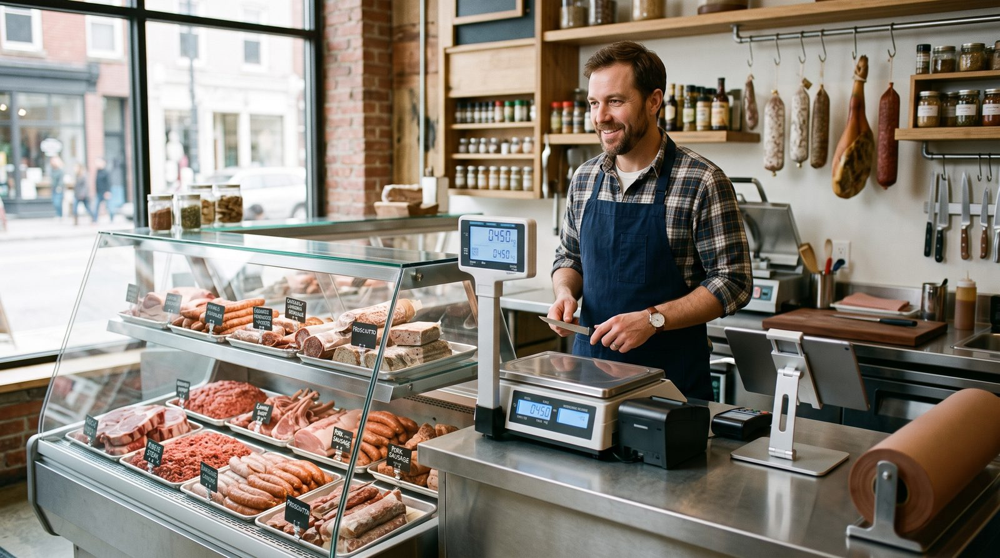

Sistema PDV para açougue: venda por peso, balança, lotes e NFC-e
Um sistema PDV para açougue não é o mesmo que um caixa de loja comum. No balcão, a maior parte do que você vende sai por peso, a balança precisa conversar com o caixa, a carne tem lote e validade, e ainda há a encomenda do churrasco de fim de semana para organizar. Este guia mostra, em linguagem direta, o que um sistema para açougue precisa ter de verdade, da integração com a balança Toledo, Filizola ou Elgin ao controle de margens e à emissão de NFC-e, e como escolher sem cair em armadilhas.

Por que o açougue precisa de um PDV diferente
Numa loja de roupas, cada item tem um código de barras fixo e um preço fechado. No açougue, é o contrário: você compra a peça inteira, desossa, separa em cortes e vende a fração de quilo que o cliente pediu. O preço só existe depois da pesagem. Some a isso a validade curta da carne, a variação de rendimento entre uma carcaça e outra e os picos de movimento no fim de semana, e fica claro por que um caixa genérico não dá conta.
Um bom programa para açougue resolve quatro frentes ao mesmo tempo: pesar e cobrar sem digitação manual, controlar de onde veio e até quando vale cada lote, organizar encomendas e vendedores, e fechar a venda com a nota fiscal certa, sem que o operador precise pensar em nada disso. É essa combinação que separa um sistema feito para o balcão de um improviso adaptado às pressas.
Venda por peso: a balança no centro de tudo
É aqui que a maioria das decisões começa. Se a balança não conversa bem com o caixa, todo o resto trava. Existem dois modos de trabalho, e o sistema ideal costuma suportar os dois.
Balança de balcão (computadora)
O atendente coloca a peça na balança, o equipamento envia peso e preço direto para o PDV e o item entra na venda. O operador não digita nada: menos erro de dedo, menos fila e menos discussão no caixa. Esse fluxo depende do sistema entender o protocolo da sua balança, e cada marca e modelo tem o seu.
Balança etiquetadora
Muito usada no autosserviço e nas bandejas prontas: a balança imprime uma etiqueta com código de barras que já carrega o peso ou o valor do item. No fechamento, o PDV lê esse código e lança a venda. É o modelo ideal quando o cliente se serve e leva ao caixa já embalado.
As marcas mais comuns no varejo brasileiro são Toledo (linhas Prix e Prisma), Filizola (Platina e modelos etiquetadores) e Elgin. O ponto prático é simples: não basta o sistema dizer que "integra com balança". Você precisa confirmar a compatibilidade com o modelo exato que já tem ou pretende comprar.
Antes de assinar qualquer sistema, pegue o nome e o modelo da sua balança e pergunte ao fornecedor, por escrito, se aquele modelo é homologado. É o teste que evita a maior dor de cabeça do açougue.
Lotes, validade e rastreabilidade: o que protege o seu açougue
Carne é produto perecível e regulado. Um sistema preparado para o setor deve registrar mais do que "entrou X kg, saiu Y kg". Procure por:
- Controle de lote na entrada da mercadoria, ligando cada corte à peça de origem.
- Data de validade por produto, com alerta do que está perto de vencer para aplicar o PVPS (primeiro que vence, primeiro que sai).
- Rendimento por carcaça e controle de perdas, para você enxergar quanto de peça bruta virou produto vendável e quanto foi osso, gordura e quebra.
- Rastreabilidade do recebimento ao balcão, útil tanto para a gestão diária quanto para qualquer recolhimento ou fiscalização.
Esse nível de detalhe é o que transforma o sistema de um simples caixa em uma ferramenta de gestão. Sem lote e validade, você descobre a perda só quando o produto já estragou. Com eles, o sistema te avisa antes. Verifique até onde cada sistema vai nesse controle, alguns cobrem lote e validade de forma completa, outros só de forma básica.
Encomendas de festas, vários vendedores e o pico do fim de semana
O fim de semana do açougue tem regras próprias. Duas funções fazem muita diferença na correria:
- Encomendas e reservas: a picanha do churrasco, a costela do domingo, o kit festa para 30 pessoas. O sistema deve registrar o pedido, a data de retirada e o sinal pago, sem depender de um papel preso na parede.
- Vários vendedores no balcão: com mais de um atendente, você quer saber quem vendeu o quê. Identificar o vendedor por venda ajuda a calcular comissão, organizar o caixa e entender a produtividade da equipe.
Junte a isso o modo offline: no sábado de pico, a internet não pode ser o motivo de a fila parar. O sistema precisa continuar pesando e vendendo mesmo sem conexão e sincronizar tudo quando a rede voltar.
NFC-e, estoque e margens: a parte que decide o seu lucro
Por trás do balcão, três controles definem a saúde do negócio.
Emissão de NFC-e
Na maioria dos estados, o açougue vende ao consumidor final e precisa emitir a NFC-e (Nota Fiscal de Consumidor Eletrônica, modelo 65), que substitui o antigo cupom fiscal. Para isso você normalmente precisa de Inscrição Estadual, certificado digital (em geral o A1), credenciamento na SEFAZ e o CSC (Código de Segurança do Contribuinte). O bom sistema faz a assinatura, a transmissão e a contingência de forma automática, você só fecha a venda. O MEI costuma ter regras próprias; confirme o seu caso com o contador.
Estoque por corte e margens
Aqui mora o lucro. Como a peça inteira vira vários cortes com preços diferentes, o sistema precisa baixar o estoque pelo rendimento real e mostrar a margem de cada corte. Sem isso, você pode estar vendendo o produto mais trabalhoso com a menor margem e nem perceber. Relatórios de venda por produto, por vendedor e por forma de pagamento fecham o quadro.
Os melhores sistemas para açougue (2026)
Abaixo, uma leitura prática do mercado, com foco no que o balcão realmente exige: venda por peso, balança, rastreabilidade, modo offline, parte fiscal e custo real.
digabloPos
O digabloPos é um PDV em nuvem moderno que cobre bem as necessidades do balcão. O plano base é gratuito para sempre (sem prazo, sem cartão de crédito), fica pronto em poucos minutos e traz venda por peso com balança, modo offline com sincronização automática, controle de estoque e margens, controle de fiado (crédito de clientes) e módulos que você ativa só quando precisa. Está pronto para a nota fiscal eletrônica, o que ajuda o açougue a se manter em dia com a SEFAZ.
👍 Pontos fortes
- Plano base grátis para sempre, sem compromisso
- Venda por peso / integração com balança
- Funciona sem internet, com sync automático
- Controle de estoque e margens
- Módulos sob demanda
- Controle de fiado (crédito de clientes)
- Pronto para a nota fiscal eletrônica
👎 A verificar
- Confirme a compatibilidade com o modelo exato da sua balança (Toledo, Filizola ou Elgin)
- Confirme a emissão de NFC-e homologada para o seu estado
- Profundidade de lote e validade conforme a sua necessidade
- Marca mais nova que ERPs nacionais tradicionais
Sistemas verticais para açougue
Existem programas especializados em açougue que nascem com rendimento de carcaça, controle por corte e rastreabilidade detalhada já configurados. São fortes para quem quer o máximo de controle de produção, em geral trabalham por mensalidade e podem exigir mais tempo de implantação. Confirme a compatibilidade com a sua balança e o custo total.
ERPs de varejo com módulo de balança
ERPs nacionais robustos oferecem PDV, emissão fiscal, estoque e integração com balança, além de relatórios completos e integração com marketplaces. São sólidos para quem já tem operação maior, mas costumam ser pagos por assinatura e podem ser mais do que um açougue de bairro precisa no começo.
Quer testar sem gastar nada?
O plano base do nosso nº 1 é grátis para sempre, fica pronto em poucos minutos e não pede cartão de crédito.
Criar meu caixa grátisTabela comparativa
| Critério | digabloPos | Verticais p/ açougue | ERPs de varejo |
|---|---|---|---|
| Plano grátis para sempre | Sim | Não | Não |
| Venda por peso / balança | Sim* | Sim | Sim |
| Modo offline + sync | Sim | Parcial | Parcial |
| Estoque e margens | Sim | Sim | Sim |
| Controle de fiado | Sim | Parcial | Parcial |
| Pronto para NFC-e | Sim* | Sim* | Sim* |
| Tempo de configuração | Poucos min | Médio | Médio |
* Comparação informativa elaborada em junho de 2026 com base em informações públicas dos fornecedores. A compatibilidade com cada modelo de balança e a homologação de NFC-e por estado mudam com frequência, confirme tudo nos sites oficiais, com o fornecedor e com a SEFAZ antes de decidir.
Como escolher o seu sistema (checklist)
- Comece pela balança. Anote marca e modelo (Toledo, Filizola, Elgin) e exija a confirmação, por escrito, de que o sistema integra com ele, em modo computadora e/ou etiquetadora.
- Confirme a parte fiscal. Pergunte se a emissão de NFC-e está homologada para a SEFAZ do seu estado.
- Verifique lote e validade. Garanta o nível de rastreabilidade e controle de perdas que o seu açougue precisa.
- Exija modo offline real com sincronização automática, pensando no pico do fim de semana.
- Cheque encomendas, vendedores e fiado, se essas rotinas fazem parte do seu dia.
- Some o custo de 12 meses, software + certificado digital + balança, antes de assinar.
Perguntas frequentes
Qual é o melhor sistema PDV para açougue?
O melhor é o que integra a venda por peso à balança (Toledo, Filizola ou Elgin), controla estoque por corte com rendimento, registra lotes e validade, lida com encomendas, separa vendas por vendedor, emite NFC-e e calcula margens, de preferência com modo offline. Confirme com o fornecedor a compatibilidade com o modelo exato da sua balança e a homologação fiscal no seu estado.
Como funciona a venda por peso com balança no PDV?
Na balança de balcão, o operador pesa e o sistema recebe peso e preço automaticamente. Na balança etiquetadora, a peça recebe uma etiqueta com código de barras que já traz o peso ou o valor, lida no fechamento. Nos dois casos, ninguém digita o peso à mão. Confirme se o sistema fala o protocolo do seu modelo de balança.
O sistema para açougue precisa emitir NFC-e?
Na maioria dos estados, sim, porque o açougue vende ao consumidor final. Você precisa de Inscrição Estadual, certificado digital, credenciamento na SEFAZ e CSC. O MEI costuma ter regras próprias. Confirme a obrigatoriedade e os prazos com a SEFAZ do seu estado e com o contador.
Dá para controlar lotes, validade e rastreabilidade da carne?
Sim. Um bom sistema registra o lote de entrada, a validade e o rendimento da peça do recebimento ao produto final, ajudando no controle de perdas, no PVPS e em eventual recolhimento. Verifique se o sistema escolhido cobre lote e validade no nível que o seu açougue precisa.
Quanto custa um sistema PDV para açougue?
Há planos base gratuitos e ERPs por assinatura que custam de dezenas a centenas de reais por mês. Além do software, considere o certificado digital (em geral o A1, renovado a cada ano) e a balança. Some o custo de 12 meses e confira o que está incluído no plano gratuito antes de decidir.
Pronto para modernizar o seu balcão?
Monte um caixa gratuito em poucos minutos, sem compromisso e sem cartão de crédito. Depois, confirme a balança e a emissão fiscal para o seu estado.
Começar grátis